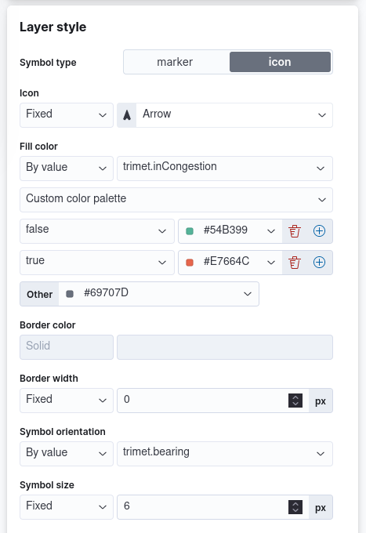
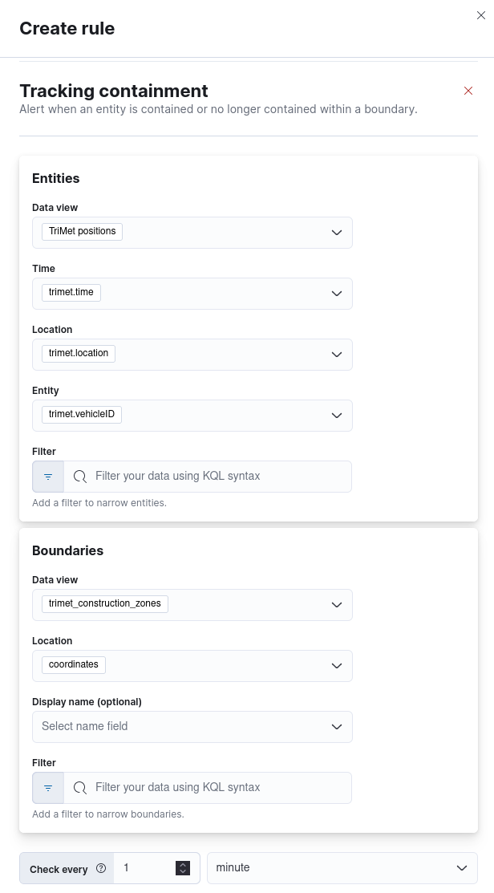
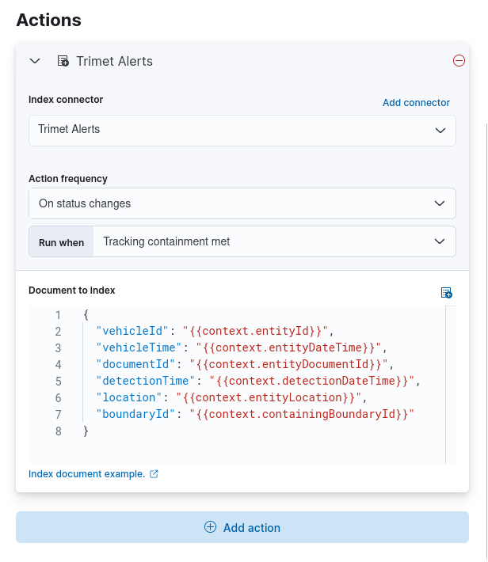
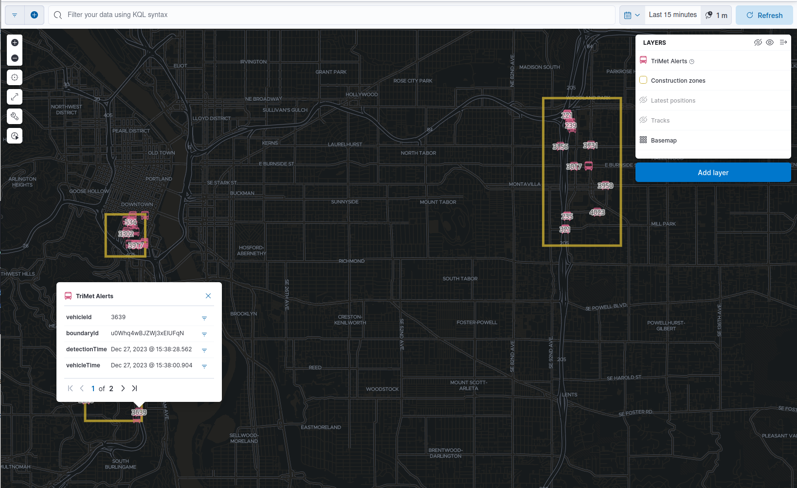

Track, visualize, and alert on assets in real time
editAre you interested in asset tracking? Good news! Visualizing and analyzing data that moves is easy with Maps. You can track the location of an IoT device and monitor a package or vehicle in transit.
In this tutorial, you’ll look at live urban transit data from the city of Portland, Oregon. You’ll watch the city buses, tram, and trains, use the data to visualize congestion, and notify a dispatch team when a vehicle enters a construction zone.
You’ll learn to:
- Use Elastic Agent to ingest the TriMet REST API into Elasticsearch.
- Create a map with layers that visualize asset tracks and last-known locations.
- Use symbols and colors to style data values and show which direction an asset is heading.
- Set up tracking containment alerts to monitor moving vehicles.
- Display those alerts on a map.
When you complete this tutorial, you’ll have a map that looks like this:
Prerequisites
edit- If you don’t already have Kibana, set it up with our free trial. Download the deployment credentials.
- Obtain an API key for TriMet web services at https://developer.trimet.org/appid/registration/.
- Fleet is enabled on your cluster, and one or more Elastic Agents is enrolled.
Part 1: Ingest the Portland public transport data
editTo get to the fun of visualizing and alerting on Portland public transport vehicles, you must first add the Custom API integration to an Elastic Agent policy to get the TriMet Portland data into Elasticsearch.
Step 1: Set up an Elasticsearch index
edit- In Kibana, open the main menu, then click Dev Tools.
-
In Console, create the
tri_met_tracksindex lifecyle policy. This policy will keep the events in the hot data phase for 7 days. The data then moves to the warm phase. After 365 days in the warm phase, the data is deleted.ILM policy definition
PUT _ilm/policy/tri_met_tracks { "policy": { "phases": { "hot": { "min_age": "0ms", "actions": { "rollover": { "max_primary_shard_size": "50gb", "max_age": "7d" }, "set_priority": { "priority": 100 } } }, "warm": { "min_age": "0d", "actions": { "set_priority": { "priority": 50 } } }, "delete": { "min_age": "365d", "actions": { "delete": { "delete_searchable_snapshot": true } } } } } } -
In Console, add the
tri_met_tracks_for_elastic_agentingest pipeline.Ingest policy definition
PUT _ingest/pipeline/tri_met_tracks_for_elastic_agent { "processors": [ { "set": { "field": "trimet.inCongestion", "value": "false", "if": "ctx?.trimet?.inCongestion == null" } }, { "convert": { "field": "trimet.bearing", "type": "float" } }, { "convert": { "field": "trimet.inCongestion", "type": "boolean" } }, { "script": { "source": """ double lat=Math.round(ctx['trimet']['latitude']*1e6)/1e6; double lon=Math.round(ctx['trimet']['longitude']*1e6)/1e6; ctx['trimet']['location'] = lat + "," + lon """, "description": "Generate the geometry rounding to six decimals" } }, { "script": { "source": """ctx['_id'] = ctx['trimet']['vehicleID'] + "_" + ctx['trimet']['time']""", "description": "Generate documentID" } }, { "remove": { "field": [ "message", "input", "agent", "ecs", "host", "event", "trimet.longitude", "trimet.latitude" ] } } ] } -
In Console, create the component and index template, which is configured to use datastreams and the previous ILM policy and ingest pipeline:
Index component template
PUT _component_template/logs-httpjson.trimet@package { "template": { "settings": { "index": { "lifecycle": { "name": "tri_met_tracks" }, "codec": "best_compression", "default_pipeline": "tri_met_tracks_for_elastic_agent" } }, "mappings": { "_routing": { "required": false }, "numeric_detection": false, "dynamic_date_formats": [ "strict_date_optional_time", "yyyy/MM/dd HH:mm:ss Z||yyyy/MM/dd Z" ], "dynamic": true, "_source": { "excludes": [], "includes": [], "enabled": true }, "dynamic_templates": [], "date_detection": true, "properties": { "input": { "properties": { "type": { "ignore_above": 1024, "type": "keyword" } } }, "@timestamp": { "ignore_malformed": false, "type": "date" }, "ecs": { "properties": { "version": { "ignore_above": 1024, "type": "keyword" } } }, "data_stream": { "properties": { "namespace": { "type": "constant_keyword" }, "type": { "type": "constant_keyword" }, "dataset": { "type": "constant_keyword" } } }, "event": { "properties": { "created": { "type": "date" }, "module": { "type": "constant_keyword", "value": "httpjson" }, "dataset": { "type": "constant_keyword", "value": "httpjson.trimet" } } }, "message": { "type": "match_only_text" }, "tags": { "ignore_above": 1024, "type": "keyword" }, "trimet": { "type": "object", "properties": { "expires": { "type": "date" }, "signMessage": { "type": "text" }, "serviceDate": { "type": "date" }, "loadPercentage": { "type": "float" }, "nextStopSeq": { "type": "integer" }, "source": { "type": "keyword" }, "type": { "type": "keyword" }, "blockID": { "type": "integer" }, "signMessageLong": { "type": "text" }, "lastLocID": { "type": "keyword" }, "nextLocID": { "type": "keyword" }, "locationInScheduleDay": { "type": "integer" }, "newTrip": { "type": "boolean" }, "direction": { "type": "integer" }, "inCongestion": { "type": "boolean" }, "routeNumber": { "type": "integer" }, "bearing": { "type": "integer" }, "garage": { "type": "keyword" }, "tripID": { "type": "keyword" }, "delay": { "type": "integer" }, "extraBlockID": { "type": "keyword" }, "messageCode": { "type": "integer" }, "lastStopSeq": { "type": "integer" }, "location": { "type": "geo_point" }, "time": { "index": true, "ignore_malformed": false, "store": false, "type": "date", "doc_values": true }, "vehicleID": { "type": "keyword" }, "offRoute": { "type": "boolean" } } } } } } }Index template
PUT _index_template/logs-httpjson.trimet { "index_patterns": [ "logs-httpjson.trimet-*" ], "composed_of": [ "logs-httpjson.trimet@package", ".fleet_globals-1", ".fleet_agent_id_verification-1" ], "priority": 200, "data_stream": { "hidden": false, "allow_custom_routing": false } }
Step 2: Configure Elastic Agent
editIf you already have an agent policy, get its identifier from the View policy action fly out
If you don’t have yet an agent policy ready:
-
Still in the Console, create an agent policy for this data source
POST kbn:/api/fleet/agent_policies?sys_monitoring=true { "name": "trimet", "description": "Policy to gather TriMet data", "namespace": "default", "monitoring_enabled": ["logs", "metrics"], "inactivity_timeout": 1209600, "is_protected": false } -
Note the
item.idvalue of the request result, it will be used later when registering your integration - Enroll a new Elastic Agent into this new policy using any of the methods provided by the UI (linux, Mac, Windows, etc.)
Execute the following request from the Console to install a new Custom API integration. Put the corresponding values for the policy_id and tri_met_app_id.
Create a new Custom API integration
POST kbn:/api/fleet/package_policies
{
"policy_id": "<policy_id>",
"package": {
"name": "httpjson",
"version": "1.18.0"
},
"name": "httpjson-trimet",
"description": "TriMet data upload",
"namespace": "default",
"inputs": {
"generic-httpjson": {
"enabled": true,
"streams": {
"httpjson.generic": {
"enabled": true,
"vars": {
"data_stream.dataset": "httpjson.trimet",
"request_url": "https://developer.trimet.org/ws/v2/vehicles?appID=<tri_met_app_id>",
"request_interval": "1m",
"request_method": "GET",
"response_split": "target: body.resultSet.vehicle",
"request_redirect_headers_ban_list": [],
"oauth_scopes": [],
"processors": "- decode_json_fields:\n fields: [\"message\"]\n target: \"trimet\"\n",
"tags": [
"trimet"
]
}
}
}
}
}
}
This request will configure the integration to make requests to the TriMet REST API every minute, splitting the API response into one message per vehicle into the httpjson.trimet data stream, and encoding the vehicle’s data into the trimet field. The rest of the data management will be handled by the ingest policy defined in the first step.
Step 3: Create a data view for the tri_met_tracks Elasticsearch index
editIn Console execute this request to create a new Kibana Data View called TriMet Positions:
POST kbn:/api/data_views/data_view
{
"data_view": {
"title": "logs-httpjson.trimet-*",
"name": "TriMet Positions",
"timeFieldName": "trimet.time"
}
}
Kibana shows the fields in your data view.
You may want to tweak this Data View to adjust the field names and number or date formatting to your personal preferences. These settings are honored by the Maps application in the tooltips and other UI elements. Check Format data fields for more details.
Step 4: Explore the Portland TriMet data
edit- Open the main menu, and click Discover.
- Set the data view to TriMet Positions.
- Open the time filter, and set the time range to the last 15 minutes.
-
Expand a document and explore some of the fields that you will use later in this tutorial:
trimet.bearing,trimet.inCongestion,trimet.location, andtrimet.vehicleID.
Part 2: Build an operational map
editIt’s hard to get an overview of Portland vehicles by looking at individual events. Let’s create a map to show the routes and current location for each vehicle, along with the direction they are heading.
Step 1: Create your map
editCreate your map and set the theme for the default layer to dark mode.
- Open the main menu, and click Maps.
- Click Create map.
- In the Layers list, click Road map, and then click Edit layer settings.
- Open the Tile service dropdown, and select Road map - dark.
- Click Keep changes.
Step 2. Add a tracks layer
editAdd a layer to show the vehicle routes for the last 15 minutes.
- Click Add layer.
- Click Tracks.
- Select the TriMet Positions data view.
-
Define the tracks:
-
Set Entity to
trimet.vehicleID. -
Set Sort to
trimet.time.
-
Set Entity to
- Click Add and continue.
-
In Layer settings:
- Set Name to Tracks.
- Set Opacity to 80%.
- Scroll to Layer Style, and set Border color to pink.
- Click Keep changes.
- In the Layers list, click Tracks, and then click Fit to data.
At this point, you have a map with lines that represent the routes of the TriMet vehicles as they move around the city.
Step 3. Indicate the direction of the vehicle tracks
editAdd a layer that uses attributes in the data to set the style and orientation of the vehicles. You’ll see the direction vehicles are headed and what traffic is like.
- Click Add layer, and then select Top Hits per entity.
- Select the TriMet Positions data view.
-
To display the most recent location per vehicle:
-
Set Entity to
trimet.vehicleID. - Set Documents per entity to 1.
-
Set Sort field to
trimet.time. - Set Sort order to descending.
-
Set Entity to
- Click Add and continue.
- Change the name to Latest positions.
-
Scroll to Layer Style.
- Set Symbol type to icon.
- Set Icon to Arrow.
-
Set the Fill color:
-
Select By value styling, and set the field to
trimet.inCongestion. - Use a Custom color palette.
- Set the Other color to a dark grey.
-
Add a green class for
false, meaning the vehicle is not in traffic. -
Add a red class for
true, meaning the vehicle is in congestion.
-
Select By value styling, and set the field to
- Set Border width to 0.
-
Change Symbol orientation to use By value and the
trimet.bearingfield.
- Click Keep changes.
- Open the time filter, and set Refresh every to 10 seconds, and click Start.
Your map should automatically refresh every 10 seconds to show the latest vehicle positions and tracks.
Part 3: Setup geo-fencing alerts
editLet’s make TriMet Portland data actionable and alert when vehicles enter construction zones.
Step 1. Add a construction zone
editAdd a layer for construction zones, which you will draw on the map. The construction zones will be used as your geofence boundary or threshold that serves as the basis for triggering alerts.
- Click Add layer.
- Click Create index.
-
Set Index name to
trimet_construction_zones. - Click Create index.
-
Draw 2 or 3 construction zones on your map:
- In the toolbar on left side of the map, select the bounding box icon .
- To draw a construction zone, click a start point on the map and drag.
- Click an endpoint to finish.
- When you finish drawing the construction zones, click Exit under the layer name in the legend.
- In Layer settings, set Name to Construction zones.
- Scroll to Layer Style, and set Fill color to yellow.
- Click Keep changes.
-
Save the map.
- Give the map a title.
- Under Add to dashboard, select None.
- Click Save and add to library.
The map now represents an operational view of live public transport traffic. You’ll see the direction that the vehicles are traveling, and whether they are near or have entered a construction zone.
Your map is now complete for now, congratulations!
Step 2. Configure an alert
editCreate a new alert by defining a rule and a connector. The rule includes the conditions that will trigger the alert, and the connector defines what action takes place once the alert is triggered. In this case, each alert will insert a new document into an Elasticsearch index.
For this example, you will set the rule to check every minute. However, when running in production this value may need to be adjusted to a higher check interval to avoid performance issues. Refer to Alerting production considerations for more information.
-
In the Kibana Console create a new index and Data view
Create an index and Data View for the alerts
# Create the alerts index PUT trimet_alerts { "settings": { "number_of_replicas": 1, "number_of_shards": 1 }, "mappings": { "properties": { "vehicleId": {"type": "keyword"}, "documentId": {"type": "text"}, "vehicleTime": {"type": "date"}, "detectionTime": {"type": "date"}, "location": {"type": "geo_point"}, "boundaryId": {"type": "keyword"}, "message": {"type": "text"} } } } # Create the alerts index data view POST kbn:/api/data_views/data_view { "data_view": { "title": "trimet_alerts", "name": "TriMet Alerts", "timeFieldName": "detectionTime" } } - Open Stack Management, and then click Rules.
- Click Create rule.
- Name the rule TriMet Alerts.
- Select the Tracking containment rule type.
-
In the Entities block
- Select the TriMet Positions Data View
-
Select
trimet.timeas the time field -
Select
trimet.locationas the location field -
Select
trimet.vehicleIDas the entity field
-
In the Boundaries block
- Select the trimet_construction_zones Data View
-
Select
coordinatesas the location field - Leave the Display name and Filter empty
- Select the rule to check every minute
- Set Check every to 1 minute.
-
Notify Only on status change.
 - Under Actions, select the Index connector type.
-
Add a new conector named TriMet Alerts
-
Select the
trimet_alertsindex -
Define time field for each document with the
detectionTimefield
-
Select the
- Leave the Action frequency with the default option: On status changes
- Leave the Run when selector with the default option: Tracking containment met
-
Use the following template to create new index documents:
{ "vehicleId": "{{context.entityId}}", "vehicleTime": "{{context.entityDateTime}}", "documentId": "{{context.entityDocumentId}}", "detectionTime": "{{context.detectionDateTime}}", "location": "{{context.entityLocation}}", "boundaryId": "{{context.containingBoundaryId}}" } - Click Save.
The TriMet Alerts connector is added to the Connectors page. For more information on common connectors, refer to the Slack and Email connectors.
Step 3. View alerts in real time
editWith the alert configured and running, in a few minutes your trimet_alerts index should start getting data. You can add this data to the operational map easily:
- Open your operational map
- Click Add layer
- Click Documents
- Select the TriMet Alerts Data View
- Change the Symbol type to Icon and select the Bus icon
- Change the color to pink
-
Enable the Label option with the
vehicleIdfield -
Add the
vehicleId,boundaryId,detectionTime, andvehicleTimefields to the tooltip configuration to allow viewing alert details on the map.
Congratulations! You have completed the tutorial and have the recipe for tracking assets. You can now try replicating this same analysis with your own data.